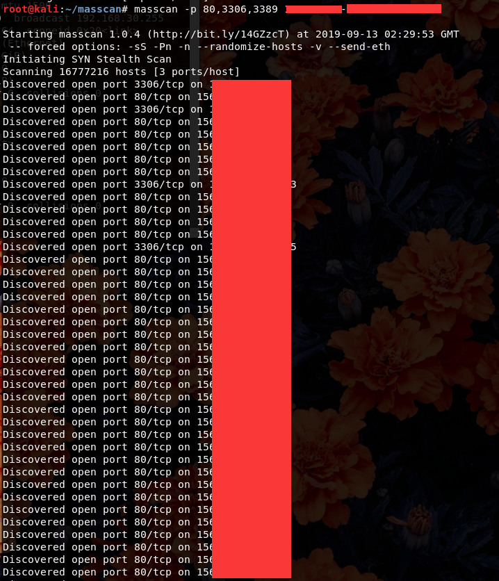

常规信息收集
常规信息收集之端口扫描
浅谈端口安全——常用端口以及常见测试项目
| key | value |
|---|---|
| 21 | ftp |
| 22 | SSH |
| 23 | Telnet |
| 80 | web |
| 80-89 | web |
| 161 | SNMP |
| 389 | LDAP |
| 443 | SSL心脏滴血 |
| 445 | SMB |
| 512,513,514 | Rexec |
| 873 | Rsync未授权 |
| 1025,111 | NFS |
| 1433 | MSSQL |
| 1521 | Oracle:(iSqlPlus Port:5560,7778) |
| 2601,2604 | zebra路由，默认密码zebra |
| 3306 | MySQL |
| 3312/3311 | kangle主机管理系统登陆 |
| 3389 | 远程桌面 |
| 4440 | rundeck |
| 5432 | PostgreSQL |
| 5900 | vnc |
| 5984 | CouchDB http://xxx:5984/_utils/ |
| 6082 | varnish |
| 6379 | redis未授权 |
| 7001,7002 | WebLogic默认弱口令，反序列 |
| 7778 | Kloxo主机控制面板登录 |
| 8000-9090 | 都是一些常见的web端口，有些运维喜欢把管理后台开在这些非80的端口上 |
| 7001,7002 | WebLogic默认弱口令，反序列 |
| 7778 | Kloxo主机控制面板登录 |
| 8080 | tomcat/WDCP主机管理系统，默认弱口令 |
| 8080,8089,9090 | JBOSS |
| 8161 | activemq未授权访问默认用户名和密码是admin |
| 8888 | amh/LuManager 主机管理系统默认端口 |
| 9200,9300 | elasticsearch |
| 10000 | Virtualmin/Webmin 服务器虚拟主机管理系统 |
| 11211 | memcache未授权访问 |
| 27017,27018 | Mongodb未授权访问 |
| 28017 | mongodb统计页面 |
| 50000 | SAP命令执行 |
| 50070,50030 | hadoop默认端口未授权访问 |
一、常规信息收集——端口信息收集
1、masscan
- Download Link：https://github.com/robertdavidgraham/masscan
- 它可以在6分钟内扫描整个互联网，从一台机器每秒传输1000万个数据包。
- masscan使用自己的自定义TCP / IP堆栈。
- 除简单端口扫描之外的任何其他操作都可能导致与本地TCP / IP堆栈冲突。
- 缺点：但是很吃带宽

2、scanport
- 小巧的windows端口快速扫描工具
- 最大线程为200
3、御剑
- 基于VB.NET + IOCP模型开发的高效端口扫描工具
- 支持IP区间合并，端口区间合并
- 端口指纹深度探测
4、常规信息收集——利用nmap快速捡洞和检洞
- 利用nmap五条指令快速捡洞和检洞：
- 系统漏洞检测：
nmap --script smb-check-vulns.nse -p 192.168.1.1 - 数据库密码检测：
nmap --script=brute 192.168.1.1 - 收集应用服务信息：
nmap -sC 192.168.1.1 - 检测常见漏洞：
nmap --script=vuln 192.168.1.1 - 检测部分应用的弱口令（负责处理鉴权证书）：
nmap --script=auth 192.168.1.1